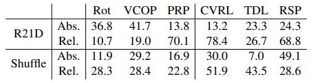
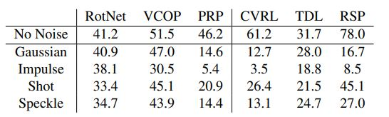
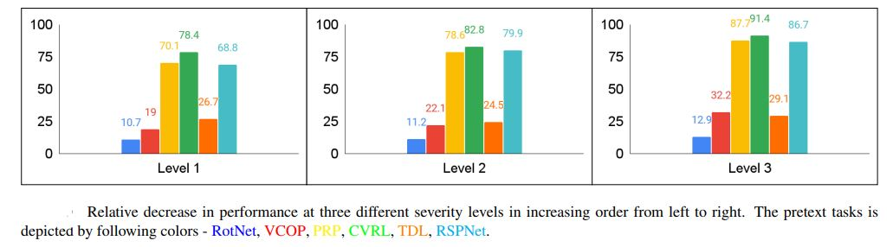

Similar to OOD datasets, introducing noise also shifts
the distribution of datasets. We evaluate models on different types of noises with different severity levels on UCF101 test dataset. Specifically, we probe into
four different types of appearance-based noises: Gaussian, Shot, Impulse and Speckle.
Original and Noisy Datasets
The test datasets have different number of videos for different levels and types of noises. For Gaussian noise, we
manipulated all 3783 samples. For noise level 1, apart from
Gaussian, we had roughly 400 samples and all other levels
of severity, we have approximately 550 samples. Example frame for each noise is shown in figure 1.
Figure 1. An example frame sample for each noise Gaussian, Impulse, Shot and Speckle respectively.
Experiments
From Table 1, looking at
the relative decrease in performance for R21D backbone,
spatio-temporal based pretext task is least robust (down by 69.5),
whereas, the scenario is opposite for ShuffleNet backbone
(down by 25.7). Most robust model is RotNet with R21D backbone
with 10.7% relative decrease, and, the least robust model is
PRP with R21D backbone with 70.1% relative decrease in
performance.

Table 1: Analysis on noise across different pretext tasks on
UCF101 dataset. The performance is averaged over 4 noises. Second row for each network shows relative percentage decrease in
performance. Abs. means absolute decrease and Rel. mean relative decrease in %.

Table 2: Analysis of all pretext tasks with noise severity level 1 on R21D network on UCF101 dataset.
The below TSNE plot shows a relative decrease
in performance for three different severity level on UCF101
dataset. RotNet is most robust across different severity levels and CVRL is the least.

Inferences
- Between contrastive and non-contrastive approaches, relative drop in performance is less for noncontrastive approaches
- R21D is more robust than
ShuffleNet in both contrastive and non-contrastive domain.